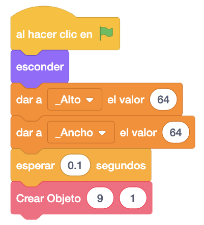
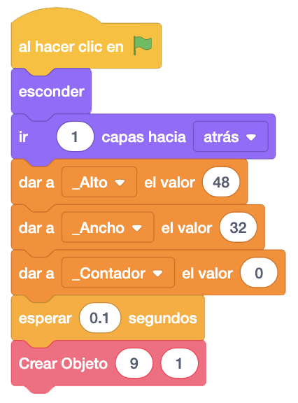
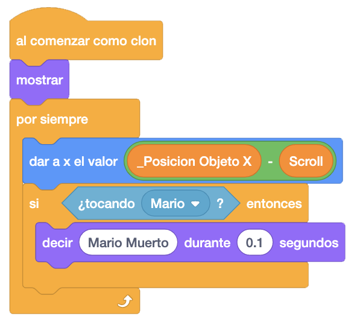
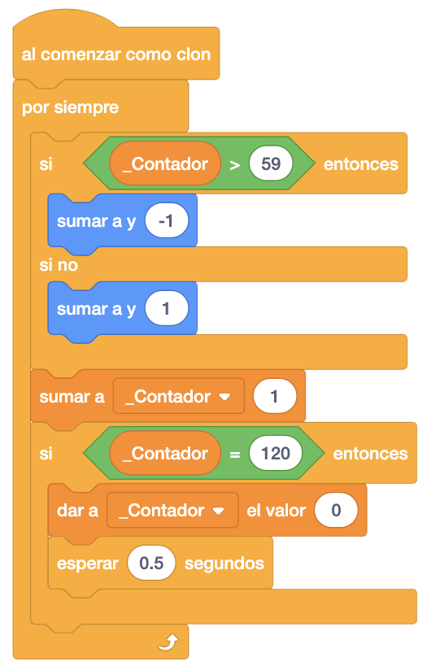
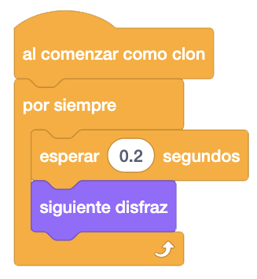

Ahora añadiremos el tiesto y la planta.
Empezaremos con el tiesto. Copiamos como en el suelo toda la programación de la plataforma y lo único que
tendremos que hacer será en el bloque "Al Hacer Clic En La Bandera", darle los valores de alto y ancho, y
crear el tiesto donde queramos, siempre que no esté debajo de la plataforma para poder probarlo sin problemas.
Con esto sería suficiente para que nuestro tiesto se volviera "duro" y nos podamos subir a él.

A continuación, añadimos la planta. Copiamos como en el suelo toda la programación de la plataforma.
Crearemos una variable local "_Contador", para controlar lo que sube y baja nuestra planta.
En el bloque "Al Hacer Clic En La Bandera" inicializaremos esta variable con "0" y mandaremos el objeto a la
capa trasera para que aparezca tras el tiesto.
Le damos los valores de alto y ancho y creamos la planta en la misma posición que el tiesto.

En cuanto al bloque de "Al Comenzar Como Clon", quitamos todo lo que hay dentro del bucle menos la asignación
de la posición "X", ya que no tenemos que subirnos ni identificar por donde le damos a la planta.
Añadiremos que si tocamos a Mario, de momento mostraremos el mensaje "Mario Muerto". Luego lo cambiaremos por
quitarle una vida a Mario.

Ahora programaremos que la planta se mueva arriba y abajo. Para esto, haremos que si el contador está entre el 0 y el 60, se mueva hacia arriba y si está entre el 61 y el 120 lo haga hacia abajo.

Finalmente le añadimos que vaya cambiando de disfraz para que abra y cierre la boca

El juego iría quedando así.
Podemos ver el juego terminado con el tiesto y la planta pulsando aquí.